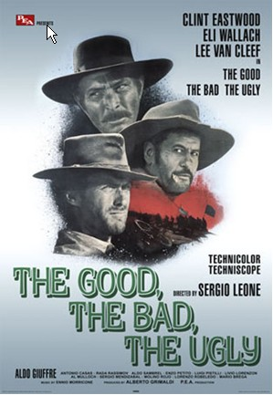

| Social Golf Day - 28 March 2010 |
|
Report by Peter Rolls

The Social Golf Day held on 28 March 2010 was a
great success.
Well, that's if you can measure success by the ability to tee off with a football
on the 3rd, or by the number of empty beer-jugs at the 10th, or by being able to
leave the course without any serious injuries - Paul Hammond excepted

Theme
The theme for the day was the
Good, the
Bad and the
Ugly (at golf anyway)
| The Good: |
|
Mark Mesiti with a hole-in-one! (great shot on the 3rd hole) |
|
| The Bad: |
|
Andrew Curdie - what a Hooker! (hits around corners!) |
|
| The Ugly: |
|
Alex McCoy - ugly positioning on the course! (and lucky to find his balls!) |
Results
| First place: |
|
Firgal Adams, Mark Mesiti, Barry Alchin, Geoff Loone |
|
| Second place: |
|
Mark Howard, Mark Dixon, Tony Borg, Paul Hammond |
|
| Third place: |
|
Peter Rolls, Margie Simpson, Wayne Fowler, Alin Neamtu |
|
| Last place: |
|
Andrew Curdie, Heather Curdie, Adrian Kennedy, Allan Ball |
Novelty Prizes
| Nearest to big tree on 1st, after 2nd shot: |
|
Rob Whyte - He was trying to go for the green! |
|
| Nearest to soccer ball in bunker on 2nd: |
|
Allan Ball - hooked it badly to find this bunker! |
|
| Nearest to pin soccer ball kick from 3rd: |
|
Tim Renfry - did a hamstring in the process! |
Funlights
-
Margie Simpson came through for her team to use her drive on one hole.
However, using a 'driver' on a par 3 is a bit unconventional!
-
Lhan embarrassed her 'mucho' male partners of Alex McCoy, Craig Smith and
Pete McGovern by using 4 of her drives out of 9 holes!
-
Heather Curdie was the 'putting' queen for her team with most of the final
putts. Dunking balls like she was 'Dunking Donuts'!
-
Watching grown men fighting over their first-place prizes of assorted NRL
wood covers. They all wanted the Rabbitohs covers. Why???
A BIG thank you to Firgal Adams for donating great
books for prizes. Especially the much needed golf tips books!
A SPECIAL thank you to North Ryde Golf Club for
providing a superb venue for us to have some fun outside of soccer.
And finally, thank you to the Female Players who
made the day more beautiful

|